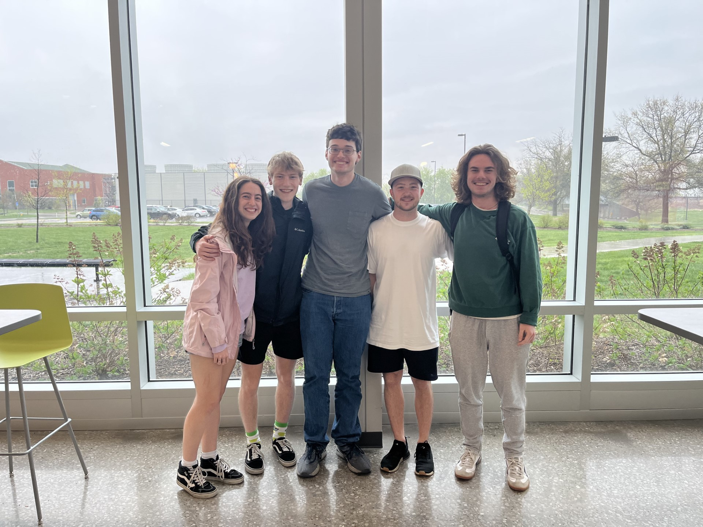
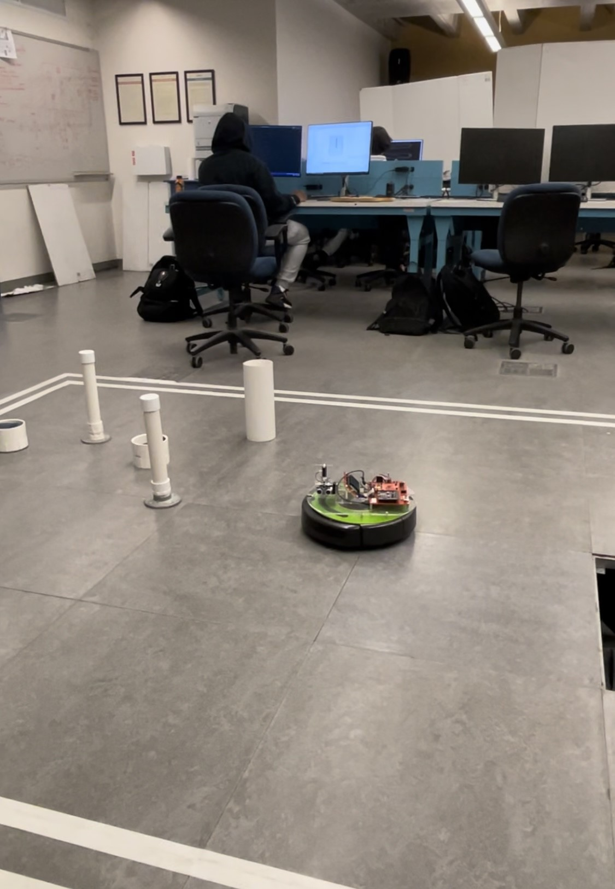
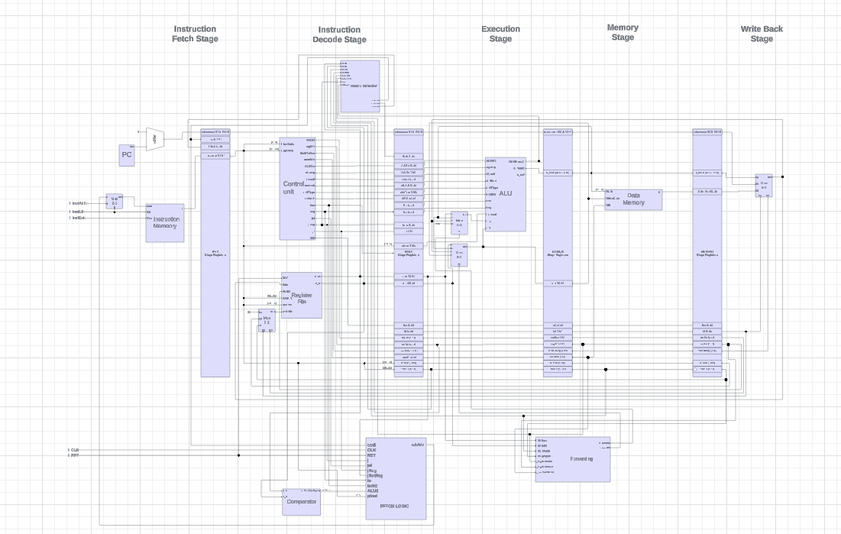
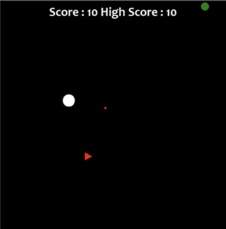

Schedulity represents a dedicated mobile scheduling application tailored specifically for college students, offering comprehensive organization of daily, weekly, and monthly schedules. Crafted collaboratively by a team of four adept students, including myself, I assumed the frontend developer role for the Android Studio application, primarily focusing on seamlessly integrating user input into our backend system. The application's core functionality generates a personalized working schedule based on user-provided details such as class schedules, extracurricular activities, and gym sessions. Developed as part of an introductory software development class, the project aimed to simulate a professional atmosphere, instilling essential skills required for efficient software design.
Throughout the semester-long endeavor, I honed various technical and professional competencies, notably adept use of version control systems, specifically Git, mastery of object-oriented programming principles, and effective collaboration within a team dynamic. The project served as a practical lesson in time management and meeting deadlines, essential attributes for any engineer operating in a professional setting As one of the two frontend developers, a significant aspect of my contribution involved implementing an immediate user survey upon account registration. This survey efficiently captured and transmitted user-inputted data to the backend team and database. This process marked my introduction to the critical concept of communication between client-side and server-side programs, representing one of the most pivotal technical insights gained from this project.
One of the most gratifying projects I undertook during college was the IRobot Mars Rover Mission. Collaborating with a team of three engineering students, we conceptualized, developed, and tested an embedded C application programmed on a Texas Instruments Tiva TM4C123 Microcontroller. The primary objective of our application was to enable users to manually navigate an IRobot Roomba across a designated test field directly from their PC, facilitated by a wireless UART connection.
Our project timeline was centered around the culmination of our efforts, the final demo day. On this day, we aimed to showcase the functionality of our embedded C program, requiring one of our group members to skillfully navigate the Roomba without visual access to the test field. To achieve this, our group ingeniously crafted a Python application capable of processing infrared and sonar scan data from the robot, translating it into a comprehensive 3D model representing obstacles within the robot's field of vision.
Our group successfully implemented these features through meticulous design and collaborative effort, culminating in an embedded program that adeptly steered the IRobot to its destination without encountering any obstacles. This project demonstrated our proficiency in embedded systems and programming and highlighted our ability to innovate and problem-solve in complex engineering endeavors.
In this project, our team designed and developed three integrated processors capable of supporting an extensive repertoire of over 30 MIPS assembly instructions. The collaborative effort involved a group of three, including myself, each responsible for designing specific components integral to our high-level architectural design. These components encompassed the Arithmetic Logical Unit (ALU), the Register File, the Data and Instruction Memory Units, and other essential elements. Our overarching objective was to enhance the performance and execution times of our processor through iterative design improvements.
The progression of our designs encompassed three distinct processor models: the single-cycle processor, the hardware-scheduled pipeline, and the software-scheduled pipeline. Each design iteration aimed to optimize the overall efficiency of our processor.
Our processor's operational sequence is initiated by fetching instructions from the instruction memory. Subsequently, the decoding process transformed these instructions into a binary address, dictating the ALU operation to be executed, identifying registers for reading and writing, and determining the address to which the Program Counter (PC) would jump.
This project provided invaluable experience working with hardware design languages, particularly VHDL, and deepened my understanding of the intricate communication dynamics between hardware and software. The successful completion of each design iteration demanded a considerable investment of time, often requiring more than 20 hours per week. Throughout this intensive process, our group applied effective communication, problem-solving, and critical thinking skills, which collectively contributed to the successful realization of this intricate project.
In my pursuit of learning Python and exploring its external libraries, I embarked on the design of a simple yet engaging arcade-style game. Leveraging the Turtle library in Python, I constructed a straightforward 2D graphical user interface where users control a small white circle.
The objective of the game is for users to maximize their score by strategically maneuvering the white circle to consume food items represented by green circles while avoiding enemy objects in the form of triangles of varying colors. The challenge lies in maintaining the circle within bounds while navigating the growing complexity of the game.
As users successfully consume food items, their white circle expands, and their score increments by 10. The game dynamically adjusts in difficulty, presenting a continuous challenge as users strive to achieve higher scores.
This project served as a platform for applying my problem-solving abilities and applying object-oriented programming principles. Through the implementation of this simple yet engaging game, I honed my skills and gained practical experience in Python and its libraries, fostering a deeper understanding of the language's capabilities
